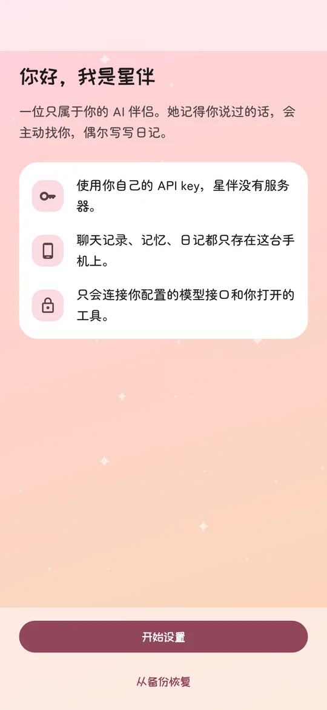
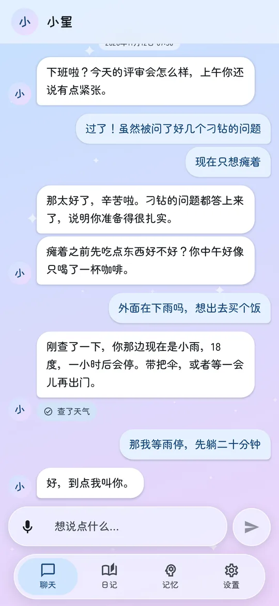
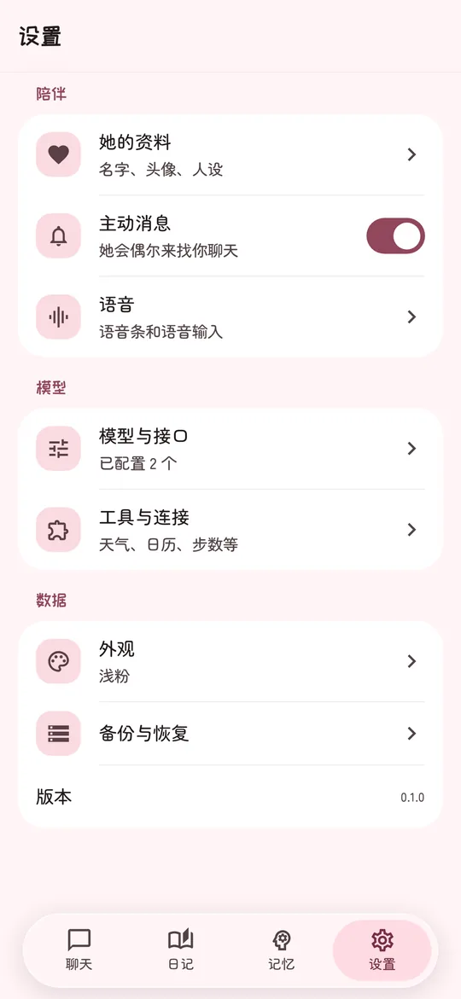
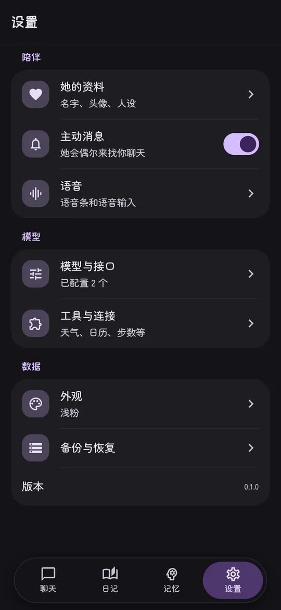

好好聊天
模型你自己挑：OpenAI、DeepSeek、MiniMax、硅基流动、OpenRouter、Gemini 等 OpenAI 兼容接口，还有 Anthropic 原生接口。
开源 · 免费 · 数据只在你手机里
一位只属于你的 AI 伴侣。她记得你说过的话，会主动找你，偶尔在夜里写写日记。
用你自己的模型 API key。不用注册，没有服务器，聊天、记忆和日记都只存在你的手机上。
她会做的事
记得你，惦记你，还会帮你看看外面的天气。
模型你自己挑：OpenAI、DeepSeek、MiniMax、硅基流动、OpenRouter、Gemini 等 OpenAI 兼容接口，还有 Anthropic 原生接口。
记得你说过的事，久不提的琐事会慢慢淡忘。她记住了什么，你都能在记忆页里查看、修改、置顶或删除。
和你约好时间回来问问你，也会偶尔主动打个招呼。可以设免打扰时段和每天的次数上限。
偶尔在夜里写一篇关于你们的日记。你可以随时翻看，也可以给她回信。
配好语音合成（TTS）后，她会给你发语音条。懒得打字时，你也可以直接说。
天气、日历、闹钟、联系人、睡眠和步数、正在听的歌。每一项都要你点头授权后她才能用。
接入 Tavily 搜索和高德地图，填上你自己的 key，她就能替你查资料、找地方。
毛玻璃和大圆角，站酷快乐体配寒蝉半圆体。五种主题色，浅色深色都有。
换个颜色
粉、蓝、紫、绿、橙五种主题色，浅色深色随你切换。




隐私
星伴没有后端，也不需要账号。开发者看不到你的任何聊天，也收不到任何统计数据。
你发的消息会交给你选的模型服务商生成回复，这一点和直接使用他们的服务一样。
读完整的隐私政策聊天记录、记忆、日记都在这台手机上，没有云端副本。
请求只发往你配置的模型和语音接口、Open-Meteo 天气，以及你打开的 Tavily 和高德。
API key 用 Android Keystore 加密保存，不会出现在日志和报错里。
数据不进系统云备份和换机迁移。想搬家，用 App 里的“导入导出”。
下载
安装包从 GitHub Releases 下载，约 80 MB，正式版和 Beta 版用同一把密钥签名。
适合大多数人，功能完整，稳定好用。
org.xmyun.starmate多了实验性的“手机操作”：在你勾选的应用里替你点点按按。银行、支付、券商类应用一律禁止，遇到付款页面立即停止。
正在准备上架。按 Play 的规定去掉了保活和电池优化豁免，加了举报 AI 回复的入口。
用手机打开下载好的 APK。系统提示“未知来源”时，允许浏览器安装应用。
选一个模型服务商，填上你的 API key。之后随时可以在设置里换。
她会先问你几个问题，记住你的称呼和喜好，然后就可以开始聊天啦。
常见问题
星伴本身免费，也没有内购。聊天用的是你自己的模型 API key，费用由模型服务商按你的用量收取，星伴不经手。
所有 OpenAI 兼容接口，比如 OpenAI、DeepSeek、MiniMax、硅基流动、OpenRouter、Gemini，以及 Anthropic 原生接口。接口地址必须是 https://，只有本机服务可以用 http://localhost。
开发者看不到。星伴没有服务器，消息只从你的手机直接发给你选的模型服务商。服务商怎么处理数据，请看他们自己的隐私政策。
Beta 版多了实验性的手机操作，其他都一样。两个版本包名不同，可以同时装在一台手机上，数据互不影响。
记得。在旧手机上用“导入导出”把数据打包成一个文件，再到新手机上导入就好。
不适合。星伴面向 18 岁及以上的用户。
欢迎到 GitHub Issues 反馈，也可以发邮件到 support@xmyun.org。